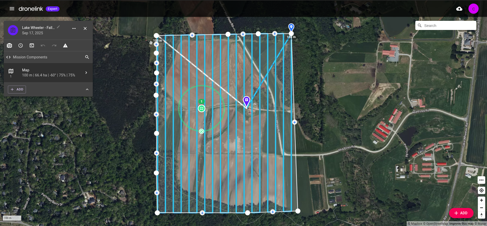
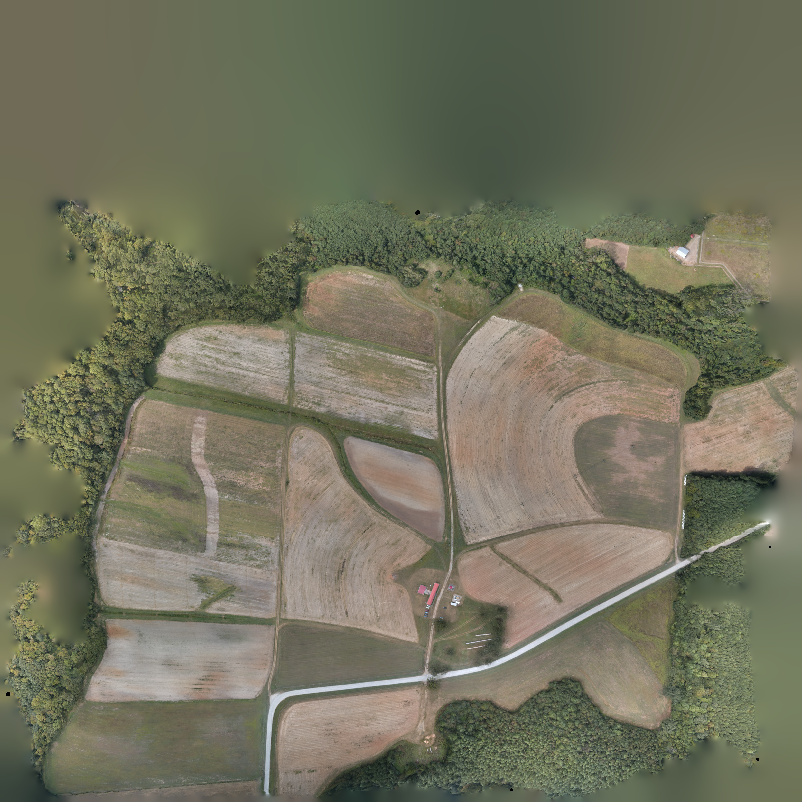

home_dir = Path.home()
grassdata = "grassdata"
project_name = "Lake_Wheeler_NCspm"
mapset = "MidtermFall2025"
data_path = Path(home_dir, grassdata, project_name, mapset)
print(f"""
Path: {data_path}
Path Exists: {data_path.exists()}
Is Directory: {data_path.is_dir()}
""")
# Start GRASS in the recently created project
session = gj.init(data_path)
tools = Tools(session=session)
Midterm Rubric
Midterm Rubric
Report Format
- Length: Minimum 4 pages, single-spaced, including text, tables, figures, and references.
- Figures & Maps: Readable size; include scale and legends (and north arrow where appropriate).
- Style: Clear, concise scientific writing; consistent citation style.
- PDF written report <unityid_midterm_report.pdf>.
Introduction:
- Prepare a brief introduction
Data & Study Area:
- Report on Data Properties & Processing:
- Resolution, extent, CRS, accuracy;
- summarize Agisoft and GRASS workflows.
Analysis / Methods:
Step-by-step DSM creation, import, co-registration, and DSM-to-DSM comparison; include a simple workflow diagram if helpful.
Results:
Qualitative and quantitative findings with tables, graphs, and maps/images (readable legends, scale bars, north arrows).
Discussion:
Impacts of flight conditions, data quality, and methods; uncertainty (vertical error propagation, alignment error, canopy effects); compare with related studies; open questions and next steps.
Conclusion:
Key findings, methodological insights, and future work.
Appendix (optional):
- Workflows, scripts, metadata, software commands, and notes on issues encountered.
Evaluatation Criteria
Point Summary
| Category | Points |
|---|---|
| Workflow Execution | 30 |
| Reporting Quality | 30 |
| Results & Interpretation | 30 |
| Figures / Maps / Appendix | 10 |
| Total | 100 |
Workflow execution (import, comparison): 30%
| Criteria | Excellent (27–30) | Strong (23–26) | Adequate (18–22) | Weak (0–17) |
|---|---|---|---|---|
| Metashape → GRASS import workflow | Steps are correct, complete, replicable; CRS handling is explicitly documented; shows understanding of DEM resolution differences and metadata from the report. | Mostly correct; minor missing details in import or CRS handling. | Contains noticeable gaps; unclear steps or partially incorrect assumptions. | Major errors or missing workflow; cannot be replicated. |
| Co-registration / alignment | Describes a correct, methodologically sound co-registration approach; clearly identifies reference/target datasets; reports alignment parameters or error statistics. | Approach is mostly correct but missing some details or explanations. | Process attempted but unclear or incorrect in major steps. | Not attempted or conceptually incorrect. |
| DSM-to-DSM comparison | Correct method (e.g., raster algebra, r.mapcalc, r.series, or r.compare); includes preprocessing steps; notes resolution and alignment issues. | Comparison done with minor issues or missing explanation of preprocessing. | Comparison incomplete or method unclear. | Absent or fully incorrect. |
Reporting quality (structure, clarity, citations): 30%
| Criteria | Excellent (27–30) | Strong (23–26) | Adequate (18–22) | Weak (0–17) |
|---|---|---|---|---|
| Organization & Formatting | Fully follows required structure: intro → data → methods → results → discussion → conclusion; ≥4 pages; single-spaced; smooth flow. | Minor structural issues; meets length requirement. | Structure is choppy, sections incomplete or merged awkwardly. | Poorly structured; missing required sections. |
| Scientific writing clarity | Clear, concise, technically accurate; proper terminology (e.g., tie points, reprojection error, resolution). | Mostly clear writing with minor clarity issues. | Several unclear or inaccurate passages. | Writing unclear, inaccurate, or informal. |
| Citations & references | Consistent citation style; references for methods, Metashape, GRASS modules, and comparative studies. | Inconsistent formatting or minor missing references. | Few citations; inconsistent or incorrect style. | No citations or clearly inadequate. |
Results, analysis, and interpretation: 30%
| Criteria | Excellent (27–30) | Strong (23–26) | Adequate (18–22) | Weak (0–17) |
|---|---|---|---|---|
| Use of quantitative results | Includes stats (min/max, mean difference, RMSE/NMAD if computed); interprets tie point metrics, reprojection error, DEM resolution, canopy effects. | Good quantitative summary with minor omissions. | Limited quantitative results; interpretation superficial. | Minimal reporting; no quantitative analysis. |
| Qualitative assessment | Insightful interpretation of DEM quality, artifacts, misalignment, canopy influence, or noise; integrates details from the Metashape report (e.g., 0.92 pix reprojection error, 139 pts/m² density). | Reasonably good interpretation; some missed opportunities. | Surface-level statements without deeper insight. | Little to no interpretation. |
| Discussion & uncertainty | Clear discussion of uncertainty sources: alignment error, vertical propagation, vegetation, camera model, flight pattern, resolution matching, and processing choices. | Adequate discussion but missing 1–2 key uncertainty components. | Minimal discussion; generic statements. | No meaningful discussion. |
Figures and maps (appendix/scripts): 10%
| Criteria | Excellent (9–10) | Strong (7–8) | Adequate (5–6) | Weak (0–4) |
|---|---|---|---|---|
| Figures & maps | High-quality maps with readable legends, scale bars, north arrows, color ramps; workflow diagram included; images properly captioned and referenced. | Mostly clear visuals; 1–2 small formatting issues. | Several readability issues (labels too small, unclear colors). | Poor or missing figures; violates basic map-making standards. |
| Appendix (optional) - Up to 10 points extra credit | Helpful scripts, commands, and workflow notes included; well organized. | Appendix included but minimal or disorganized. | Sparse or marginally useful appendix. | No appendix or not useful. |
Flight Plan
Students didn’t have this data but I’m including for completness.

| Setting | Value |
|---|---|
| Lens | 4.36 mm |
| Sensor | 6.17 mm x 4.65 mm |
| Gimble Pitch | -60 degrees |
| GSD | 4.11 cm/px |
| Pattern | Normal |
| Drone Heading | Forward |
| Max Speed | 32.2 km/h |
| AGL (m) | 100 |
| Vert Overlap | 75% |
| Horz Overlap | 75% |
Agisoft Report

Link to download the Agisoft Report.
Students should report on the following components.
- Provide simple site detail (where, when)
- Mention image overlap (In this case we had excellent image overlap).
- Report on flight statistics
| Metric | Value | Comment |
|---|---|---|
| Number of images | 1,108 | |
| Camera stations | 1,090 | |
| Flying altitude | 115 m | Alt is 15 m higher than it should be. |
| Tie points | 288,071 | |
| Ground resolution | 4.24 cm/px | GSD is good for UAS |
| Projections | 3,296,336 | |
| Coverage area | 1.03 km² | |
| Reprojection error | 0.92 pix | Reprojection error is in expect range |
These values indicate a high-overlap, high-resolution UAS survey typical of mapping-grade workflows. The ~4 cm GSD and strong forward/side overlap (visible from Fig. 1 of the report) support robust feature matching.
DEM Comparison
Summarize qualitative and quantitative changes between your generated DSM and the 2013 lidar DTM (mid_pines_lidar2013_dem).
GRASS Setup
Start a GRASS session.
Import Images from Lake Wheeler Flight Data
uas_image_dir = Path(
home_dir,
"Documents",
"gis-course-data",
"gis584",
"uas-flight-data",
"Lake Wheeler - NCSU",
"091725",
)with gs.RegionManager(e="e+100", w="w-250", s="s-150"):
m = gj.Map(width=600, use_region=True)
m.d_rast(map="dtm_relief")
m.d_vect(map="footprints")
m.d_barscale()
m.d_legend(raster="mid_pines_lidar2013_dem", flags="b")
m.show()Set Computational Region
The student can set the computational region to 0.3m (~ 1 ft) using the spatial extent of the mid_pines_lidar2013_dem.
tools.g_region(raster="mid_pines_lidar2013_dem", res=0.3, flags="pa")Display LiDAR DTM
To confirm everything is working we can view our source LiDAR-DTM data and topographic derivatives (Figure 1).
Import UAS DSM
Import the UAS DSM data from the provide url. Students may either download the DSM data then import it into GRASS or directly download and improt using r.import.
dsm = "https://storage.googleapis.com/gis-course-data/gis584/uas-flight-data/Lake%20Wheeler%20-%20NCSU/091725/dsm.tif"
tools.r_import(
input=dsm,
memory=3000,
output="agi_dsm_07_25",
resample="bilinear",
resolution="region",
extent="region",
title="Lake Wheeler DSM - 24 September 2025",
overwrite="true",
)(Optional) Import UAS Ortho
ortho_url = "https://storage.googleapis.com/gis-course-data/gis584/uas-flight-data/Lake%20Wheeler%20-%20NCSU/091725/ortho.cog.tif"
tools.r_import(
input=ortho_url,
memory=3000,
output="agi_ortho_07_25",
resample="nearest",
title="Lake Wheeler Ortho - 24 September 2025",
overwrite=True,
verbose=True,
)Resample UAS DSM to 0.3m
We will explicity resample our UAS-DSM data to \(0.3m\) using bilinear interpolation to the extent of the mid_pines_lidar2013_dem.
with gs.RegionManager(raster="mid_pines_lidar2013_dem", res=0.3):
tools.r_resamp_interp(
input="agi_dsm_07_25", output="agi_dsm_07_25_03m", method="bilinear"
)Display UAS DSM
The import UAS-DSM, ortho, and topographic derivatives can be view in figure Figure 2.
Examine DTM and DSM data
First look at the metadata using r.info.
dsm_info = tools.r_info(map="agi_dsm_07_25", format="json").json
dsm_03m_info = tools.r_info(map="agi_dsm_07_25_03m", format="json").json
dem_info = tools.r_info(map="mid_pines_lidar2013_dem", format="json").jsonNow compare the univariate statistics.
dsm_univar = tools.r_univar(map="agi_dsm_07_25", format="json").json
dsm_03m_univar = tools.r_univar(map="agi_dsm_07_25_03m", format="json").json
dem_univar = tools.r_univar(map="mid_pines_lidar2013_dem", format="json").jsonWe could also view our data as histograms. Students should comment that the datasets are not vertically alligned.
dsm_03m_array = garray.array(mapname="agi_dsm_07_25_03m")
dtm_array = garray.array(mapname="mid_pines_lidar2013_dem")
# Plot raster histogram
sns.histplot(data=dsm_03m_array.ravel(), kde=True)
sns.histplot(data=dtm_array.ravel(), kde=True)
plt.show()Create a DEM of difference (DoD) between the UAS DSM and LiDAR DTM.
tools.r_mapcalc(expression="raw_diff = agi_dsm_07_25_03m - mid_pines_lidar2013_dem")Examine the map of the DoD.
tools.r_colors(map="raw_diff", color="difference", flags="e")
m = gj.Map()
m.d_rast(map="raw_diff")
m.d_barscale()
m.d_legend(raster="raw_diff", flags="b")
m.d_title(map="raw_diff")
m.show()View the univariate statistics for the DoD.
raw_diff_univar = tools.r_univar(map="raw_diff", flags="e", format="json").json
raw_diff_univar_mean = round(raw_diff_univar["mean"], 3)
df_raw_diff_univar = pd.DataFrame([raw_diff_univar], index=["Raw DoD"])
df_raw_diff_univar.round(1).TThe mean difference was {python} raw_diff_univar_mean m.
Co-Register the UAS DSM with the LiDAR DTM
Here we used the road to as a stable feature to calculate our verticle shift.
For the sake of the exam how the student determines the shift is less important than them just realizing a verticle shift is required.
mean_shift = (df_dsm_profile["value"] - df_dtm_profile["value"]).mean()
print(f"Mean shift: {mean_shift}")The mean difference was {python} mean_shift m. So we can subtract the mean difference from the DSM.
tools.r_mapcalc(expression=f"agi_dsm_07_25_03m_vs = agi_dsm_07_25_03m - {mean_shift}")dsm_vs_univar = tools.r_univar(map="agi_dsm_07_25_03m_vs", format="json").json
df_reg_univar = pd.DataFrame([dsm_vs_univar, dem_univar], index=("DSM Reg", "DTM"))
df_reg_univar.round(1).Ttools.r_mapcalc(expression="dod = agi_dsm_07_25_03m_vs - mid_pines_lidar2013_dem")diff_univar = tools.r_univar(map="dod", format="json", flags="e").json
df_diff_univar = pd.DataFrame([diff_univar])
df_diff_univar.round(1).Tdf_diff_profile = point_profile_dataframe("midpines_rd", "dod")
df_diff_profile.describe()Look closer at “Bowl Effect”
Dome Profile
Buildings Profile